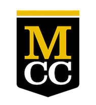

My employment at UTC Aerospace as a Sotware Engineer developing image processing software and algorithms
continued to get me further interested in software development.
That is why I decided it was time to return to school, and work on my M.S. in Software Development.
At BU, I am learning modern web application and mobile development technologies which I hope to be able to
put to use at UTC.
Imaging Science is the multidisciplinary combination of optics, imaging system engineering, solor science,
and image processing.
During my time at RIT, I focused my studies on image processing, and took a variety of Computer Science
classes to obtain a minor in CS.
I worked on campus as a teaching assistant for the freshman and sophomore Image Processing classes, and as a
reasearch assistant for the DIRS lab.
I won the John Wiley Jones Student in Science awar in Spring 2015, and graduated Magna Cum Laude with a GPA
of 3.70.

Monroe Community College
A.S. Mathematics/PhysicsGraduated 2012
I completed many of my core requirements at MCC, including Math, Physics and English.
It was also at MCC that I was first introduced to computer programming, in a class called "Programming for
Engineers".
Looking back, this was quite a rudimentary class, but it sparked an interest that continued to grow
throughout the rest of my time in school.
I graduated with distinction, with a GPA of 3.87.